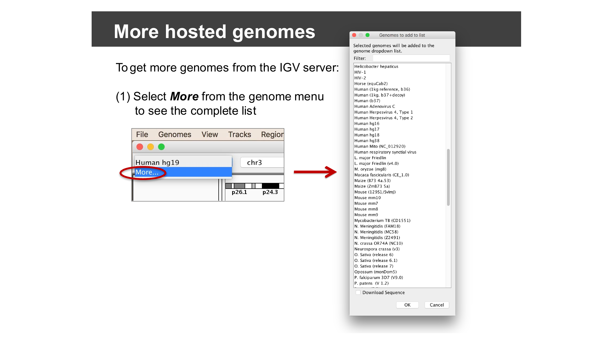
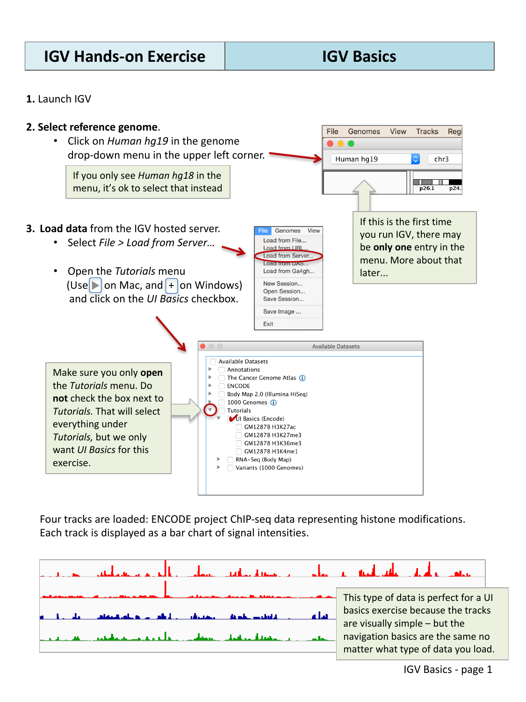
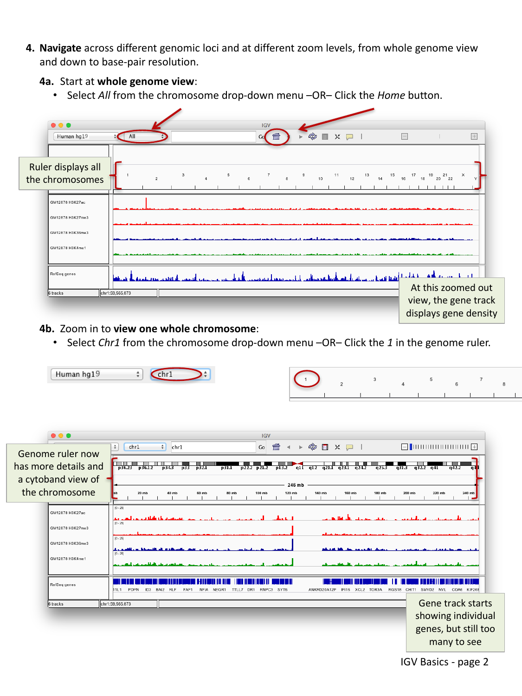
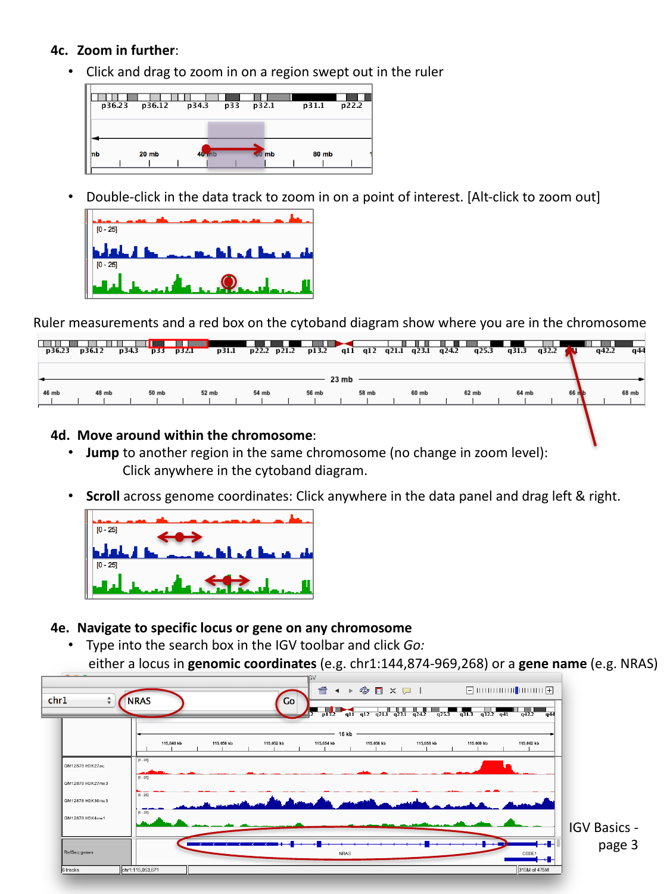
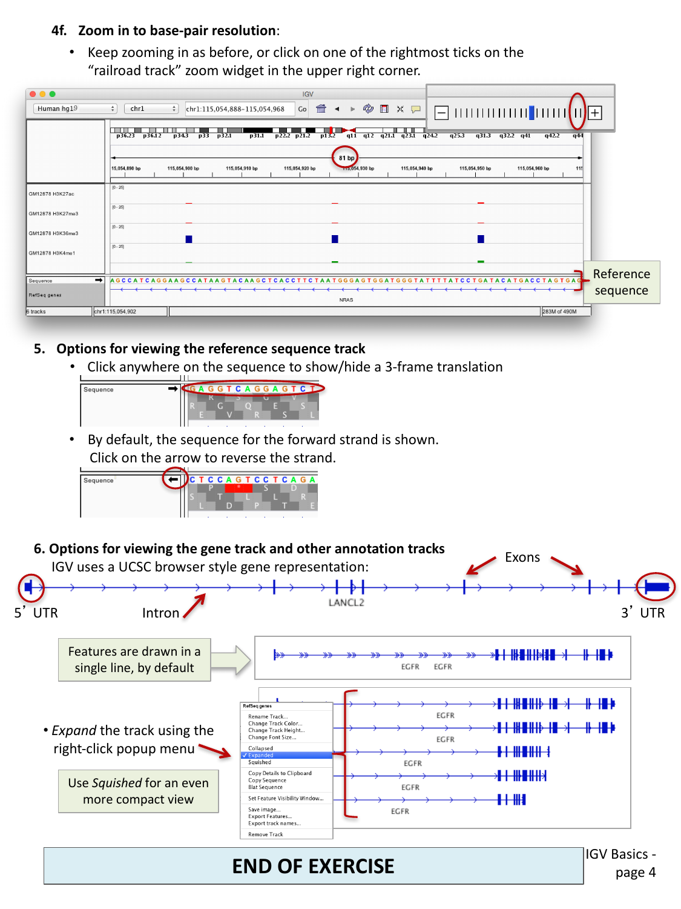
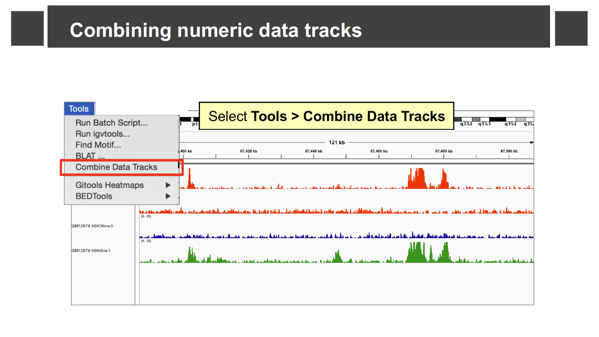
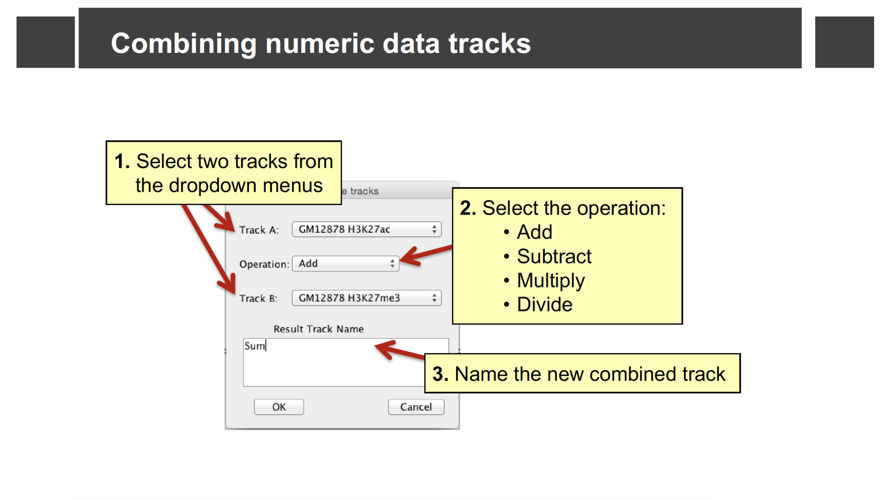
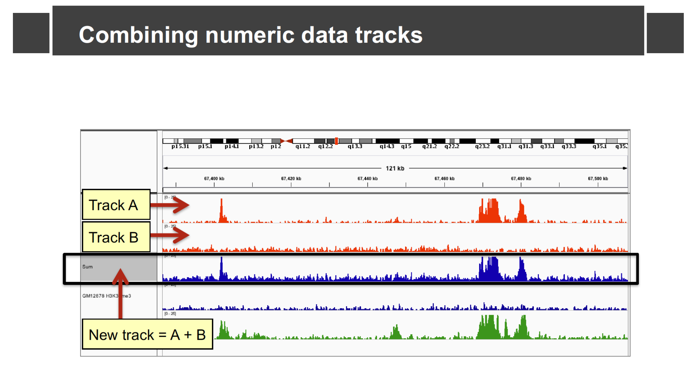

IGV Basics
Last updated on 2026-09-03 | Edit this page
Overview
Questions
- How do I load a reference genome and some example data into IGV?
- How do I move around the genome at different zoom levels?
- How do I read the sequence and gene tracks?
Objectives
- Select a reference genome and load track data hosted on the IGV server.
- Navigate between whole-genome, chromosome, and base-pair resolution views.
- Jump directly to a genomic locus or gene by name.
- Interpret the reference sequence track and the gene annotation track.
- Combine two numeric tracks with a simple arithmetic operation.
This episode uses example data hosted directly on the IGV server, so you will need an internet connection.
Select a reference genome
Click the genome drop-down menu in the upper left corner of IGV and select Human hg19. (If you only see Human hg18 in the menu, that is fine — select that instead.)
More hosted genomes
The genome menu is short the first time you install IGV, but IGV hosts dozens of genomes beyond human. Select More… from the genome drop-down menu to browse and add other hosted genomes (bacteria, model organisms, other builds, and more) to your menu.

Load data from the IGV server
Select File > Load from Server…, open the Tutorials menu (click the triangle/plus next to it — do not check the box next to Tutorials itself, or you will load everything underneath it), and check the box next to UI Basics (Encode).

Four tracks are loaded: ENCODE project ChIP-seq data representing histone modifications. Each track is displayed as a bar chart of signal intensities. This kind of data is a good choice for learning navigation, because the tracks are visually simple, but the navigation basics are the same no matter what type of data you load.
Navigate across the genome
IGV lets you move between four broad zoom levels: the whole genome, a single chromosome, a specific region, and individual bases.
Whole genome view
Select All from the chromosome drop-down menu, or click the Home button, to see all chromosomes at once. At this zoomed-out view, the gene track displays gene density rather than individual genes.
One whole chromosome
Select Chr1 from the chromosome drop-down menu, or click 1 in the genome ruler.

The genome ruler now shows more detail and a cytoband ideogram of the chromosome. The gene track starts showing individual genes, but there are still too many to make out individually.
A smaller region
Click and drag across a region in the ruler to zoom in on it. You can also double-click anywhere in a data track to zoom in centered on that point (Alt-click to zoom back out).

As you zoom, the ruler measurements and a red box on the cytoband diagram update to show you where you are in the chromosome.
To move around without changing the zoom level:
- Jump to another region on the same chromosome by clicking anywhere on the cytoband diagram.
- Scroll across genome coordinates by clicking anywhere in the data panel and dragging left or right.
Jump to a locus or gene by name
Type a locus in genomic coordinates
(e.g. chr1:144,874,969-969,268) or a gene name
(e.g. NRAS) into the search box in the toolbar and click
Go.
Base-pair resolution
Keep zooming in as before, or click one of the rightmost ticks on the “railroad track” zoom widget in the upper right corner, until you can see individual bases.
Typing NRAS into the search box and clicking
Go takes you directly to the gene, at a zoom level that
shows the full gene body along with the loaded ChIP-seq tracks. From
there, continue zooming in (drag across the ruler, double-click a track,
or use the + on the zoom widget) until individual bases and
their 1-2 letter codes appear in the sequence track at the bottom.
The reference sequence track
Once you are zoomed in far enough, a Sequence track appears showing the reference genome sequence, one base per column.

- By default, the forward strand sequence is shown. Click the arrow next to the sequence track to switch to the reverse strand.
- Click anywhere on the sequence track to show or hide a 3-frame amino acid translation.
The gene annotation track
IGV displays gene models (like the loaded RefSeq genes track) using the same convention as the UCSC Genome Browser: a horizontal line for introns, thicker blocks for exons, and even thicker blocks at each end for the untranslated regions (5’ UTR and 3’ UTR).
By default, overlapping transcripts for the same gene are drawn on a single line. Right-click on the track name and choose:
- Expanded to draw each transcript on its own line, or
- Squished for an even more compact view than the default.
Compare gene track display modes
Navigate to a gene with multiple transcripts, such as
EGFR. Right-click on the RefSeq genes track name
and try Collapsed, Expanded, and
Squished. What is the trade-off between these three
modes?
Collapsed draws all transcripts on one line (compact, but you cannot tell transcripts apart). Expanded draws one transcript per line (easiest to read individual isoforms, but takes up the most vertical space). Squished also draws one transcript per line but with much thinner rows, letting you fit many transcripts in a small space at the cost of readability.
Combining numeric data tracks
IGV can combine two numeric (signal) tracks with a simple arithmetic operation, which is useful for comparing or normalizing tracks without leaving IGV. Select Tools > Combine Data Tracks.

In the dialog, pick Track A and Track B from the loaded numeric tracks (for example, two of the ChIP-seq tracks you loaded earlier), choose an Operation (Add, Subtract, Multiply, or Divide), and name the result.

IGV adds a new track computed from the two source tracks at every position.

Combine two of the loaded ChIP-seq tracks
Using the four ENCODE ChIP-seq tracks loaded earlier in this episode, add two of them together with Tools > Combine Data Tracks. How does the combined track’s shape compare to its two source tracks?
The combined (“Sum”) track shows a peak wherever either source track has a peak, with the height reflecting the total signal from both tracks at that position. This kind of combination is useful, for example, to see a combined read-density signal without switching your eyes back and forth between two separate tracks.
- Load a reference genome first, then load data tracks with File > Load from Server… or File > Load from File…; use Genomes > More… to add other hosted genomes beyond the default.
- IGV supports four broad zoom levels: whole genome, chromosome, region, and base-pair resolution; drag on the ruler, double-click a track, or use the search box to move between them.
- The sequence track shows the reference genome and, optionally, a 3-frame translation; the gene track shows exons, introns, and UTRs, and can be displayed collapsed, expanded, or squished.
- Tools > Combine Data Tracks lets you add, subtract, multiply, or divide two numeric tracks into a new derived track.